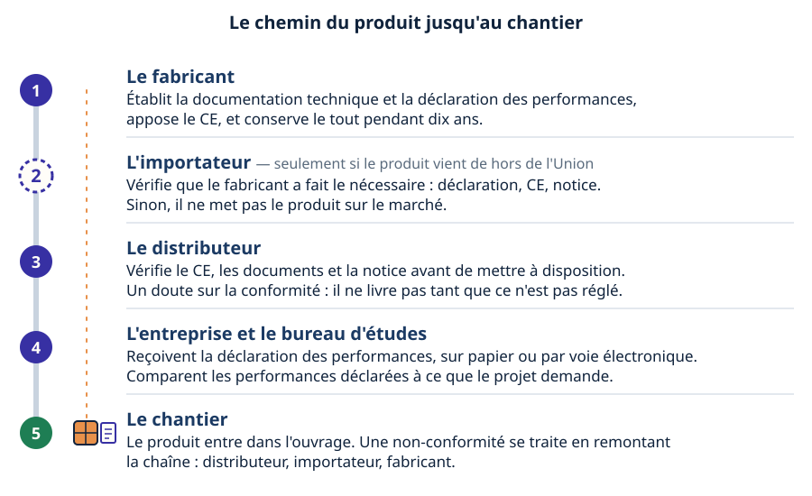
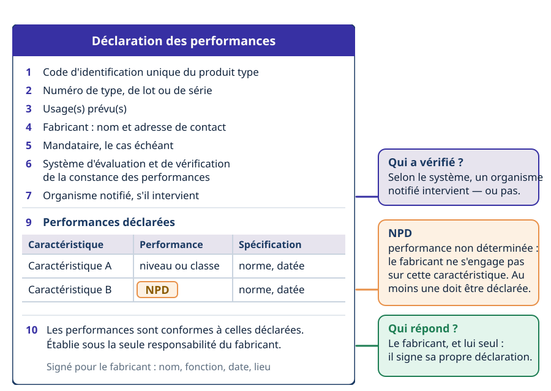
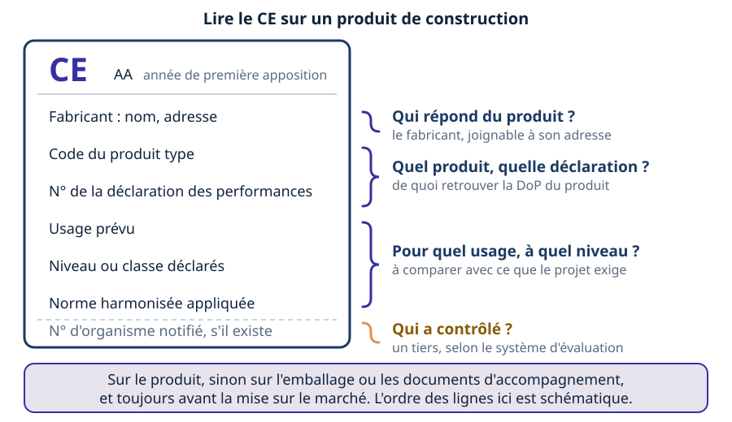
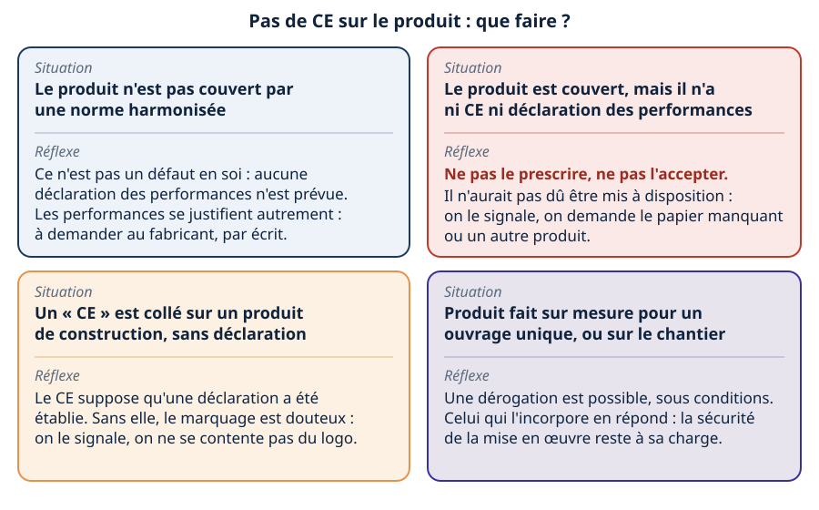
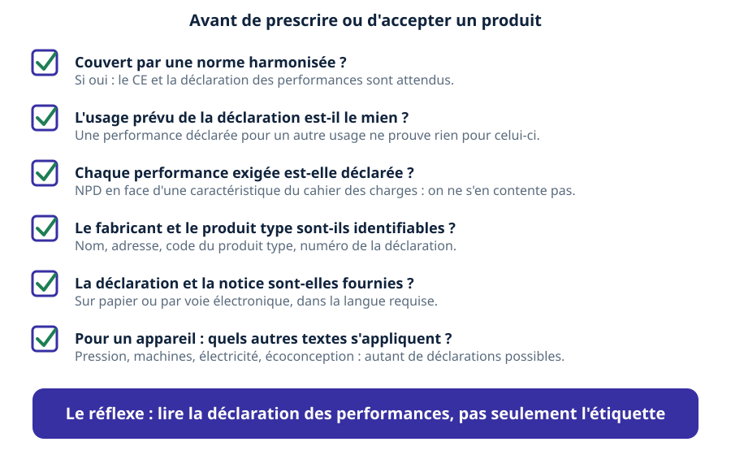
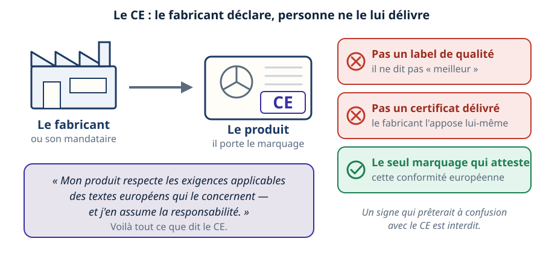

Mini-station commentée · 8 écrans et 4 questions · environ 10 minutes
Objectif
À la fin de la station, vous savez que le marquage CE n'est pas un label de qualité mais la déclaration du fabricant qu'il respecte les textes européens applicables à son produit. Vous savez lire une déclaration des performances (DoP) de produit de construction, situer les autres textes qui visent un appareil CVC, et dire ce que vous vérifiez avant de prescrire — y compris quand le marquage manque.
Référentiel : TP TECVC, REAC TP-00133 — compétences CP9 (climatisation) et CP10 (centrale de traitement d'air), quand vous choisissez et prescrivez un appareil à partir des données du constructeur.
Chaque écran peut être expliqué à voix haute : le bouton « Écouter » commente ce que vous voyez. Rien n'est dit qui ne soit aussi écrit.
1 / 12
Écran 1 sur 8
Le CE : une déclaration, pas un label
Le marquage CE ne peut être apposé que par le fabricant ou son mandataire. En l'apposant, le fabricant indique qu'il assume la responsabilité de la conformité du produit avec toutes les exigences applicables des textes européens d'harmonisation qui prévoient ce marquage (règlement (CE) n° 765/2008, article 30).
Trois idées à écarter. Le CE n'est pas un label de qualité : il ne dit pas « meilleur », il dit « conforme aux textes qui s'appliquent ». Il n'est pas délivré : même quand un organisme notifié intervient dans le contrôle de la production, son numéro suit le CE, il ne le remplace pas. Et il n'est apposé que sur les produits pour lesquels un texte européen le prévoit expressément.
C'est aussi le seul marquage qui atteste cette conformité, et il est interdit d'apposer un signe qui pourrait en faire confondre la signification.
Le CE, c'est la parole du fabricant : il déclare, personne ne le lui délivre.
Écran 2 sur 8
Le chemin du produit jusqu'au chantier
Pour un produit de construction (règlement (UE) n° 305/2011), la responsabilité se répartit le long de la chaîne :
le fabricant établit la déclaration des performances, appose le CE, et conserve la documentation technique et la déclaration dix ans après la mise sur le marché (article 11) ;
l'importateur, si le produit vient de hors de l'Union, s'assure que le fabricant a fait le nécessaire avant de le mettre sur le marché (article 13) ;
le distributeur vérifie le CE, les documents et la notice ; au moindre doute sur la conformité, il ne met pas le produit à disposition (article 14).
La déclaration accompagne le produit, sur papier ou par voie électronique ; une copie papier est fournie au destinataire qui la demande (article 7). Un importateur ou un distributeur qui commercialise le produit sous son propre nom, ou le modifie, est traité comme un fabricant (article 15).

Le colis descend la chaîne ; chaque maillon vérifie ce qui le concerne.
Écran 3 sur 8
Produits de construction : quand la DoP s'impose
Un produit de construction est un produit fabriqué et mis sur le marché pour être incorporé de façon durable dans un ouvrage, et dont les performances influent sur celles de l'ouvrage. Lorsqu'il est couvert par une norme harmonisée ou conforme à une évaluation technique européenne, le fabricant établit une déclaration des performances (DoP) à la mise sur le marché ; le CE est apposé quand elle existe, et pas sans elle (règlement (UE) n° 305/2011, articles 2, 4 et 8).
Trois dérogations sont possibles pour un produit couvert : la pièce faite sur mesure pour un ouvrage unique identifié, le produit fabriqué sur le chantier, la fabrication traditionnelle pour un ouvrage protégé — et seulement si aucun texte, national ou européen, n'exige la déclaration (article 5).
Ce texte évolue. Le règlement (UE) 2024/3110 abroge le règlement 305/2011 à compter du 8 janvier 2026, mais les articles sur la déclaration des performances restent applicables jusqu'au 8 janvier 2040 aux produits couverts par des normes harmonisées en vigueur à cette date (articles 94 et 95). Le ministère chargé de la construction indique que les deux versions coexistent jusqu'en 2040. La déclaration devient, dans le nouveau régime, une « déclaration des performances et de la conformité ».
Trait plein : le chemin qui mène à la DoP et au CE. Trait tireté : celui qui n'y mène pas.
Écran 4 sur 8
La DoP qui se déplie
La déclaration des performances suit un modèle (annexe III du règlement 305/2011). Elle identifie le produit type, son usage prévu, le fabricant, le système d'évaluation et de vérification de la constance des performances, puis liste les caractéristiques essentielles avec leur performance, exprimée par un niveau, une classe ou une description, et la norme harmonisée employée.
Deux mots à connaître. NPD : « performance non déterminée », inscrit en face d'une caractéristique listée pour laquelle le fabricant ne déclare rien ; au moins une caractéristique pertinente doit pourtant être déclarée (article 6). Et le système (1+, 1, 2+, 3 ou 4) dit qui a vérifié quoi : dans le système 4, le fabricant fait tout et aucun organisme notifié n'intervient (annexe V).
La déclaration est établie sous la seule responsabilité du fabricant. Une performance peut se déclarer par classe : pour la réaction au feu, la station Euroclasses montre le cas.

La feuille se déplie de haut en bas ; les trois encadrés à droite se lisent en dernier.
Écran 5 sur 8
Lire le CE sur un produit
Le règlement liste ce qui suit le CE : les deux derniers chiffres de l'année de première apposition, le nom et l'adresse du fabricant, le code unique du produit type, le numéro de la déclaration des performances, le niveau ou la classe déclarés, la norme harmonisée appliquée, le numéro de l'organisme notifié le cas échéant, et l'usage prévu (article 9).
Le marquage est visible, lisible et indélébile, sur le produit ou sur une étiquette attachée ; si la nature du produit ne le permet pas, sur l'emballage ou les documents d'accompagnement. Il est apposé avant la mise sur le marché.
Pour vous, le numéro de la déclaration est la clé : il sert à retrouver la DoP complète auprès du fabricant.

Quatre questions pour lire une étiquette. L'ordre des lignes est schématique.
Écran 6 sur 8
Les autres produits CVC : un CE, plusieurs textes
Un appareil relève rarement d'un seul texte. En apposant le CE, le fabricant engage sa responsabilité sur toutes les exigences applicables des textes d'harmonisation qui prévoient ce marquage. Pour un appareil CVC, il peut s'agir :
des équipements sous pression (directive 2014/68/UE : déclaration UE de conformité, marquage CE) — voir la station Marquage & papiers ;
des machines (directive 2006/42/CE, remplacée par le règlement (UE) 2023/1230 à partir du 14 janvier 2027), du matériel électrique (directive 2014/35/UE) et de la compatibilité électromagnétique (directive 2014/30/UE) ;
de l'écoconception : pour un produit couvert par une mesure d'exécution, un CE et une déclaration de conformité sont exigés (directive 2009/125/CE, article 5, remplacée par le règlement (UE) 2024/1781, dont les mesures existantes restent applicables).
L'étiquette énergie (règlement (UE) 2017/1369) est autre chose : un cadre d'information qui aide le client à choisir un produit plus performant. Voir Écoconception.
Les cartes apparaissent une à une ; le CE se pose en dernier.
Écran 7 sur 8
Le produit sans marquage
Un CE absent n'a pas toujours la même signification. Avant de conclure, vérifiez si le produit est couvert par une norme harmonisée :
non couvert : pas de déclaration prévue par ce règlement, donc pas de CE à ce titre ; ce n'est pas un défaut, mais la justification des performances est à demander au fabricant ;
couvert, ni CE ni déclaration : le produit n'aurait pas dû être mis à disposition (l'importateur et le distributeur doivent s'en assurer, articles 13 et 14) ; on ne le prescrit pas, on ne l'accepte pas ;
CE sans déclaration : le CE n'est apposé que si une déclaration des performances a été établie (article 8) ; sans elle, le marquage est douteux et se signale ;
sur mesure ou sur le chantier : dérogation possible sous conditions (article 5) ; le fabricant est alors responsable de l'incorporation en sécurité du produit.
Les États membres doivent assurer l'application correcte du régime du CE et prévoir des sanctions en cas d'usage non conforme (règlement (CE) n° 765/2008, article 30).

Quatre situations, quatre réflexes : le rouge est le seul cas où l'on refuse tout de suite.
Écran 8 sur 8
Bilan et le réflexe
Le CE est la déclaration du fabricant, pas un label de qualité ni un certificat délivré.
Produit de construction couvert par une norme harmonisée : CE et DoP vont ensemble, et le fabricant garde ses papiers dix ans.
La DoP se lit : usage prévu, performances déclarées, NPD, système de vérification.
Un appareil CVC peut relever de plusieurs textes qui prévoient chacun le CE.
Sans marquage : d'abord savoir si le produit est couvert, puis agir.
Le réflexe : lire la DoP en entier, pas seulement l'étiquette.

Six cases avant de prescrire ou d'accepter un produit.
Question 1 sur 4
Le marquage CE est apposé par qui, et que dit-il ?

Rappel de l'écran 1 — le CE, c'est la parole du fabricant.
Question 2 sur 4
Un produit couvert arrive chez le négociant sans CE ni DoP. Que fait-il ?
Rappel de l'écran 2 — chaque maillon vérifie avant de passer le produit.
Question 3 sur 4
Le fabricant conserve la DoP et la documentation technique…
Rappel de l'écran 4 — la DoP, rubrique par rubrique.
Question 4 sur 4
Le cahier des charges exige une performance ; la DoP porte NPD dessus. Que faire ?
Rappel de l'écran 8 — six cases avant de prescrire.
Les correspondances de la station
Loi, norme ou DTU ? (même sous-ligne)
— le CE renvoie à des normes harmonisées : qui oblige quoi, et ce qu'une norme change.
Marquage & papiers (autre sous-ligne : La DESP)
— le même CE et la même déclaration de conformité, vus pour un équipement sous pression.
Écoconception (autre sous-ligne : Impact environnemental)
— l'appareil marqué CE porte aussi une étiquette énergie, qui est autre chose.
Euroclasses (autre sous-ligne : Incendie)
— une performance au feu se déclare par classe dans la DoP.
![À gauche, une usine schématique : le fabricant, ou son mandataire. Une flèche mène à un produit dont la plaque porte les lettres CE. Un encadré résume ce que le fabricant déclare : son produit respecte les exigences applicables des textes européens qui le concernent, et il en assume la responsabilité. À droite, trois cartes : le CE n'est pas un label de qualité, il n'est pas un certificat délivré, et c'est le seul marquage qui atteste cette conformité européenne. Une note dit qu'un signe qui prêterait à confusion avec le CE est interdit.](svg/ce-declaration.svg)
![Un arbre de décision. Un produit de construction ; question : est-il couvert par une norme harmonisée ou une évaluation technique européenne ? Oui, trait plein vert : le fabricant établit une déclaration des performances puis appose le CE. Non, trait tireté rouge : pas de déclaration ni de CE au titre de ce règlement. En bas, trois dérogations possibles : pièce sur mesure pour un ouvrage unique, produit fabriqué sur le chantier, fabrication traditionnelle pour un ouvrage protégé, si aucun texte n'exige la déclaration.](svg/quand-une-dop.svg)
![Au centre, un appareil CVC avec un ventilateur et une plaque CE. Autour, six cartes : produits de construction (règlement 305/2011), équipements sous pression (directive 2014/68/UE), machines (directive 2006/42/CE puis règlement 2023/1230), matériel électrique (directives 2014/35/UE et 2014/30/UE), écoconception (directive 2009/125/CE puis règlement 2024/1781), et en tirets l'étiquette énergie (règlement 2017/1369), qui informe l'acheteur sans être un CE. Un bandeau dit que le CE engage le fabricant sur toutes les exigences applicables.](svg/autres-textes-cvc.svg)